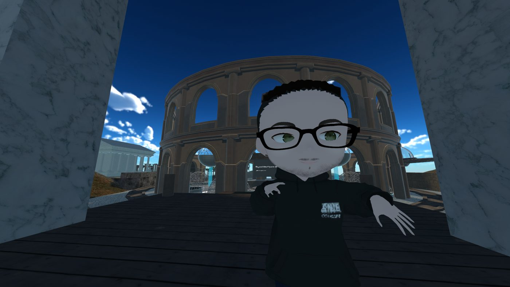

Beyond Meet Space found its direction during the COVID-19 pandemic, when videoconferencing became the default for professional and academic work.
The group spans communication, human-computer interaction, game studies, and educational technology.

Five studies, in order
- 1
Text analysis
Millions of social media posts on how people describe virtual meetings.
- 2
Surveys
Several thousand remote workers, stratified by gender and race.
- 3
Interviews
Game-development professionals on play, representation, and identity in virtual work.
- 4
Focus groups and experiments
Tests of meeting features drawn from the first three studies.
- 5
Platform
A prototype built in Unity, hosted in VRChat, and open to everyone.
We are now studying how research communities gather and work together as AI becomes part of that work.
The next version of the platform is being planned. Scholars, platform designers, and funders working on these questions are welcome to write.
See the team